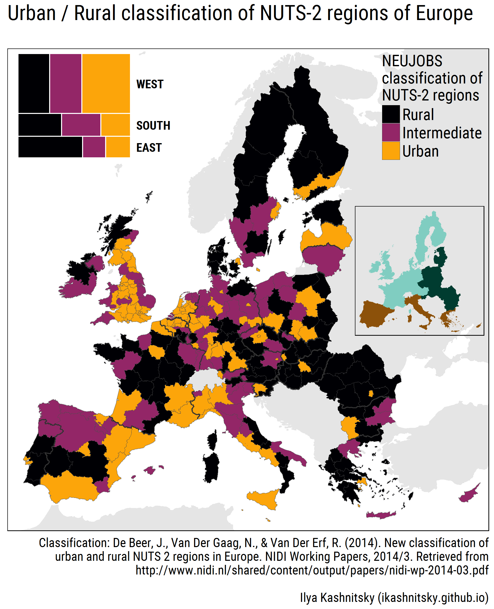
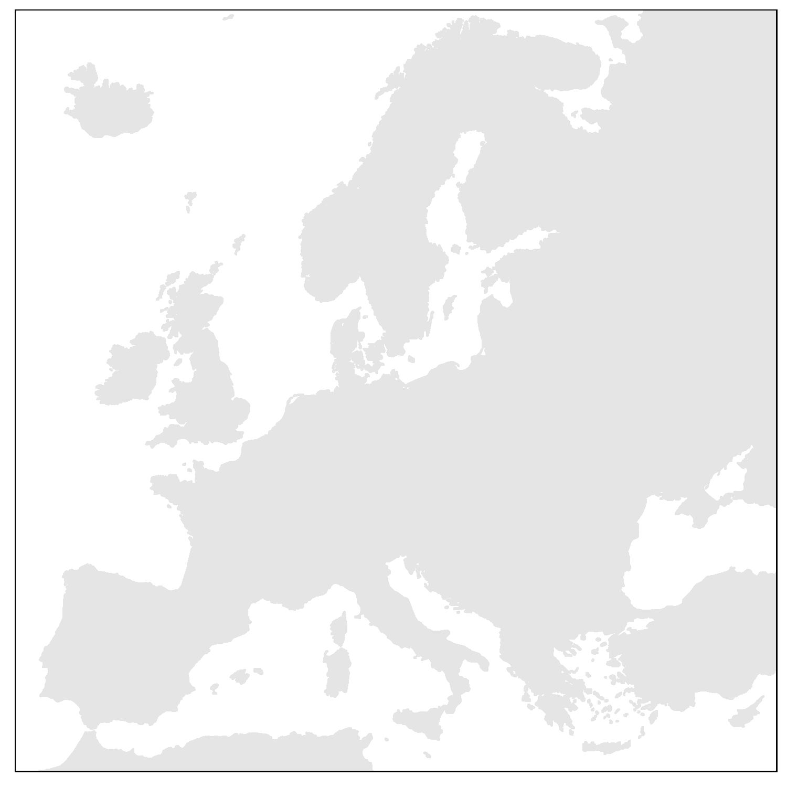
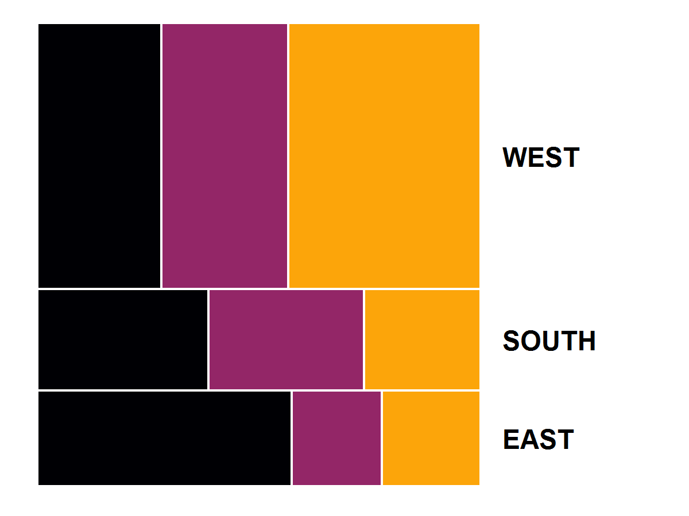

![]()
{kind=link}
# additional packages
library(tidyverse)
library(ggthemes)
library(rgdal)
library(viridis)
library(RColorBrewer)
library(extrafont)
myfont <- "Roboto Condensed"
# load the already prepared data
load(url("https://ikashnitsky.github.io/share/1705-map-subplots/df-27-261-urb-rur.RData"))
load(url("https://ikashnitsky.github.io/share/1705-map-subplots/spatial-27-261.RData"))Following the surprising success of my latest post, I decided to show yet another use case of the handy annotation custom function. Here I will show how to add small graphical information to maps – just like putting a stamp on an envelope.
The example comes from my current work on a paper, in which I study the effect of urban/rural differences on the relative differences in population ageing (I plan to tell a bit more in one of the next posts). Let’s have a look at the map we are going to reproduce in this post:

So, with this map I want to show the location of more and less urbanized NUTS-2 regions of Europe. But I also want to show – with subplots – how I defined the three subregions of Europe (Eastern, Southern, and Western) and what is the relative frequency of the three categories of regions (Predominantly Rural, Intermediate, and Predominantly Rural) within each of the subregions. The logic of actions is simple: first prepare all the components, then assemble them in a composite plot. Let’s go!
The code to prepare R session and load the data.
Now, I prepare the spatial objects to be plotted with ggplot2 and create a blank map of Europe – our canvas.
# fortify spatial objects
bord <- fortify(Sborders)
fort <- fortify(Sn2, region = "id")
# join spatial and statistical data
fort_map <- left_join(df,fort,"id")
# create a blank map
basemap <- ggplot()+
geom_polygon(data = fortify(Sneighbors),aes(x = long, y = lat, group = group),
fill = "grey90",color = "grey90")+
coord_equal(ylim = c(1350000,5450000), xlim = c(2500000, 6600000))+
theme_map(base_family = myfont)+
theme(panel.border = element_rect(color = "black",size = .5,fill = NA),
legend.position = c(1, 1),
legend.justification = c(1, 1),
legend.background = element_rect(colour = NA, fill = NA),
legend.title = element_text(size = 15),
legend.text = element_text(size = 15))+
scale_x_continuous(expand = c(0,0)) +
scale_y_continuous(expand = c(0,0)) +
labs(x = NULL, y = NULL)
Okay, now the envelope is ready. It’s time to prepare the stamps. Let’s create a nice mosaic plot showing the distribution of NUTS-2 regions by subregions and the urb/rur categories. I found the simplest way to create a nice mosaic plot on Stack Overflow.
# create a nice mosaic plot; solution from SO:
# http://stackoverflow.com/a/19252389/4638884
makeplot_mosaic <- function(data, x, y, ...){
xvar <- deparse(substitute(x))
yvar <- deparse(substitute(y))
mydata <- data[c(xvar, yvar)];
mytable <- table(mydata);
widths <- c(0, cumsum(apply(mytable, 1, sum)));
heights <- apply(mytable, 1, function(x){c(0, cumsum(x/sum(x)))});
alldata <- data.frame();
allnames <- data.frame();
for(i in 1:nrow(mytable)){
for(j in 1:ncol(mytable)){
alldata <- rbind(alldata, c(widths[i],
widths[i+1],
heights[j, i],
heights[j+1, i]));
}
}
colnames(alldata) <- c("xmin", "xmax", "ymin", "ymax")
alldata[[xvar]] <- rep(dimnames(mytable)[[1]],
rep(ncol(mytable), nrow(mytable)));
alldata[[yvar]] <- rep(dimnames(mytable)[[2]], nrow(mytable));
ggplot(alldata, aes(xmin=xmin, xmax=xmax, ymin=ymin, ymax=ymax)) +
geom_rect(color="white", aes_string(fill=yvar)) +
xlab(paste(xvar, "(count)")) +
ylab(paste(yvar, "(proportion)"));
}
typ_mosaic <- makeplot_mosaic(data = df |> mutate(type = as.numeric(type)),
x = subregion, y = type)+
theme_void()+
scale_fill_viridis(option = "B", discrete = T, end = .8)+
scale_y_continuous(limits = c(0, 1.4))+
annotate("text",x = c(27, 82.5, 186), y = 1.05,
label=c("EAST", "SOUTH", "WEST"),
size = 4, fontface = 2,
vjust = 0.5, hjust = 0,
family = myfont) +
coord_flip()+
theme(legend.position = "none")
Just what we needed. The next step is to build a small map showing the three subregions of Europe. But before we proceed to the maps, one thing has to be fixed. ggplot2 fails rendering nested polygons. With our regional dataset, London, for example, will not be shown if we do not account for this unpleasant feature. Luckily, there is quite a simple solution to fix that problem.
# a nice small function to overcome some mapping problems with nested polygons
# see more at SO
# https://stackoverflow.com/questions/21748852
gghole <- function (fort) {
poly <- fort[fort$id %in% fort[fort$hole, ]$id, ]
hole <- fort[!fort$id %in% fort[fort$hole, ]$id, ]
out <- list(poly, hole)
names(out) <- c("poly", "hole")
return(out)
}Now I build the small map of subregions.
# pal for the subregions
brbg3 <- brewer.pal(11,"BrBG")[c(8,2,11)]
# annotate a small map of the subregions of Europe
an_sub <- basemap +
geom_polygon(data = gghole(fort_map)[[1]],
aes(x = long, y = lat, group = group, fill = subregion),
color = NA)+
geom_polygon(data = gghole(fort_map)[[2]],
aes(x = long, y = lat, group = group, fill = subregion),
color = NA)+
scale_fill_manual(values = rev(brbg3)) +
theme(legend.position = "none")
Finally, everything is ready to build the main map and stick the two subplots on top of it.
# finally the map of Urb/Rur typology
caption <- "Classification: De Beer, J., Van Der Gaag, N., & Van Der Erf, R. (2014). New classification of urban and rural NUTS 2 regions in Europe. NIDI Working Papers, 2014/3. Retrieved from http://www.nidi.nl/shared/content/output/papers/nidi-wp-2014-03.pdf
\nIlya Kashnitsky (ikashnitsky.github.io)"
typ <- basemap +
geom_polygon(data = gghole(fort_map)[[1]],
aes(x=long, y=lat, group=group, fill=type),
color="grey30",size=.1)+
geom_polygon(data = gghole(fort_map)[[2]],
aes(x=long, y=lat, group=group, fill=type),
color="grey30",size=.1)+
scale_fill_viridis("NEUJOBS\nclassification of\nNUTS-2 regions",
option = "B", discrete = T, end = .8)+
geom_path(data = bord, aes(x = long, y = lat, group = group),
color = "grey20",size = .5) +
annotation_custom(grob = ggplotGrob(typ_mosaic),
xmin = 2500000, xmax = 4000000,
ymin = 4450000, ymax = 5450000)+
annotation_custom(grob = ggplotGrob(an_sub),
xmin = 5400000, xmax = 6600000,
ymin = 2950000, ymax = 4150000)+
labs(title = "Urban / Rural classification of NUTS-2 regions of Europe\n",
caption = paste(strwrap(caption, width = 95), collapse = '\n'))+
theme(plot.title = element_text(size = 20),
plot.caption = element_text(size = 12))Done!
Of course, it takes several iterations to position each element in its proper place. Then, one also needs to play with export parameters to finally get the desired output.
The full R script for this post is here